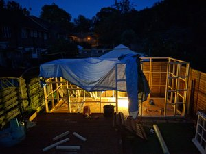

Build Logs
Detailed build log, mainly time-lapses, videos and photos of the construction.

Building the Framework
Details of building the base and make the stud work.
Building the cladding & Roof
Some vlogs of the cladding and roof
Building the Electrics
Details of the electrics to the shed
Inside the shed
Kitting out the inside of the shed